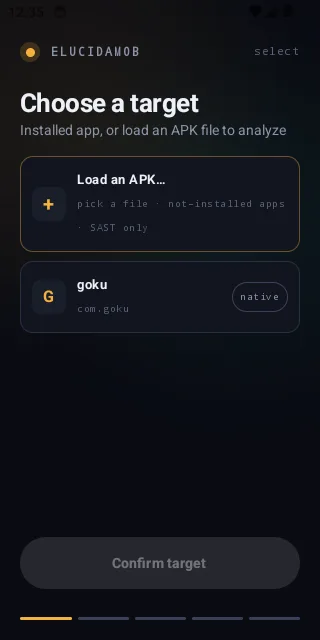
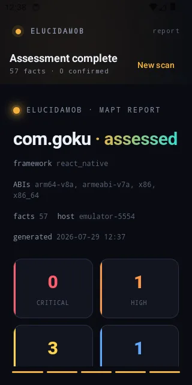

The lab / mobile
ElucidaMob
Mobile pentest, on autopilot.

What it is
An Android-first MAPT agent — static analysis proposes, dynamic analysis confirms. An on-device Compose app picks the target; the host CLI runs deep SAST plus Frida / DNAT DAST over Wi-Fi.
The approach
Static findings become dynamic hypotheses the agent then proves on a live device, so the report is grounded in what actually happened, not just what the code looked like.

